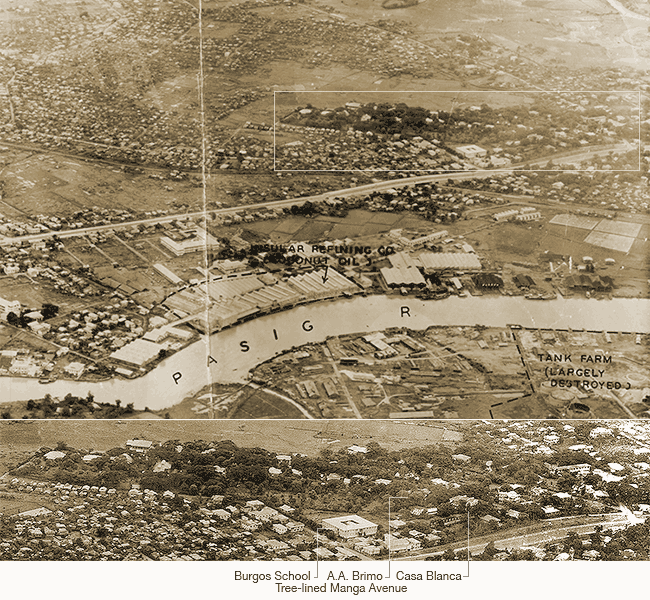

|
j
a v a s c r i p t |
| Pg.1 | Pg.2 Manga Ave. |
Housing Crisis
August 30, 1944
Keller tells me the Japanese are planning to turn the area from Manga Avenue to the Santol district into a military reservation. Residents in Hillcrest, including the Klinglers, Mueller and Keller, were told they'd have to move. The boys made representations to the Japanese Embassy, and got this reply: "As far as we are concerned, there are only two territories strictly neutral in this war — Switzerland and the Vatican.... We'll do the best to save your houses." The spokesman unfolded a map and told them that three Swiss houses in the area could not be saved: "Their case is hopeless." Keller looked at the map and didn't see Manga Avenue in it. So three Swiss families will move; the five in Manga Avenue don't have to ... not without a fight, at least. When I passed the information on to La'O, who lives in his brother's property to the right of Santol Street, he became pale. "It can't be," he moaned. "When they kicked us out of our house on the Boulevard, they promised not to molest us again. In fact we have SPECIAL Japanese papers to that effect." Well, he'll have to move again. One family had agreed to give up their house if the Japanese would let them move into a certain specified house. The Japanese obliged by kicking the occupants of that house out in 24 hours. Well, that house is now in the zone so they'll have to move again.
Gen. Paulino Santos
Tribune: Laurel appointed General Paulino Santos as Chief of the P.I. Constabulary, succeeding General Francisco, who is now Chairman of the New Advisory Board. The Editorial speaks of the growing confidence of Filipinos in their government. It's true because we have been technically attacked and the government has not declared war. The Japanese have been placed in the ridiculous position of keeping silent on the Davao bombing when every Filipino knows about it. Fort Santiago is full of Filipinos again; the latest one taken in was Colonel Alba. The Japanese are rounding up ex-USAFFE men on the presumption that they were aiding guerrillas. Japanese espionage is good; some real guerrilleros are being rounded up almost daily. Those listening to radios too are being taken in when caught, particularly those passing the "information" around openly. I've decided to be more careful. |
|
|
|
|
|
| Pg.1 House Crisis| Pg.2 |
Manga Avenue 1944
August 30, 1944

|